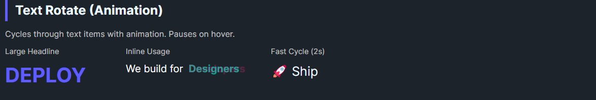

DaisyTextRotate cycles through its items with fade transitions, auto-advancing on a timer. It supports custom duration, per-transition timing, easing, pause-on-hover, and manual pausing. Ideal for rotating taglines or small sets of text snippets.
| Property | Description |
|---|---|
Duration (ms) |
Total loop duration across all items (default 10000). |
TransitionDuration (ms) |
Fade time between items (default 500). |
CurrentIndex |
0-based index of the visible item; wraps automatically. |
IsPaused |
Halts rotation when true. |
PauseOnHover |
Stops rotation while pointer is over the control (default true). |
Easing |
Easing for fade transitions (default CubicEaseInOut). |
<!-- Rotating headline -->
<StackPanel Orientation="Horizontal" Spacing="8">
<TextBlock Text="We build for" VerticalAlignment="Center" FontSize="16"/>
<controls:DaisyTextRotate FontSize="16" FontWeight="Bold" Duration="4000">
<TextBlock Text="Designers" Foreground="{ThemeResource DaisyAccentBrush}"/>
<TextBlock Text="Developers" Foreground="{ThemeResource DaisySecondaryBrush}"/>
<TextBlock Text="Everyone" Foreground="{ThemeResource DaisySuccessBrush}"/>
</controls:DaisyTextRotate>
</StackPanel>
<!-- Fast cycle -->
<controls:DaisyTextRotate FontSize="20" Duration="2000" TransitionDuration="250">
<TextBlock Text="Art" />
<TextBlock Text="Code" />
<TextBlock Text="Ship" />
</controls:DaisyTextRotate>PauseOnHover=True (default) so users can read hovered text.Duration/TransitionDuration together to balance time visible vs. time fading.IsPaused to external state (e.g., when the control is offscreen) to avoid unnecessary animation work.